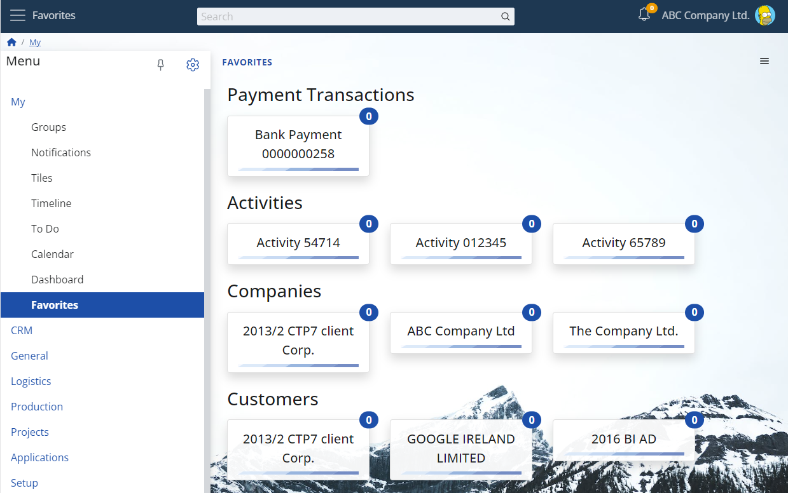

Overview of ERP.net Web Client Favorites
"My Favorites" provides a visual representation of special objects that you are following, also known as your favorite objects (i.e. objects with Follow level = Favorite). Much like My Tiles, the main visual element here is the tile, although with some differences. The caption of the tile is the display text of the favorite object, and the badge displays the count of available new notifications.

Consequently, an example of the overall view of "My Favorites" looks like this:

Favorites are represented as tiles. The tiles are organized into groups based on the entities they belong to. Each tile shows:
- the object’s display text, and
- a badge with the count of new notifications for that object (when available).
Additionally, clicking on a tile will open the form for the favorite object.
Note
After the update that introduced follow levels, all existing follows are migrated to level “Tagged” by default.
As a result, users may initially see an empty Favorites app until they mark objects as Favorite.
Getting started
Add an object to Favorites
To add an object to Favorites, mark it as such, which sets its follow level to Favorite.
- Open the object in Web Client.
- Use the follow (star) button in the form header (or from the context menu).
- Click until the object becomes Favorite.
Optionally use the Favorites button in the context menu of the record.
OR you can skip this cycle by pressing Ctrl+Mouse-click on the star icon.

For details about follow levels, see Social follows.
Open a favorite object
- Open Favorites.
- Click a tile to open the form of that object.
Remove single object from Favorites
- Open the object.
- Click icon once to change to state "No follow"
OR you can press Shift+Mouse click on the star icon to unfollow.
Further clicks on the star icon go through follow-states cycle.
Remove several objects from Favorites
- Open My Favorites app
- From the context menu switch Toggle "Edit" on
- Click on the red "X" button on each tile
- Confirm removal in the dialogue box.

Concepts
Necessary transition
Before the introduction of Follow levels, users expressed their interest on the object by marking it as a Favorite. From v.27 on things become more intuitive and complicated for the system. All existing Favorites are migrated to Tagged level, which "wipes out" the Favorites from the application (there are no favorites by default at the beginning of the version).
What is shown in Favorites
- Favorites lists only objects with Follow level = Favorite. Objects that are Tagged (automatic follow), or Following do not appear in Favorites.
- A user can have up to 50 favorite objects. If you reach the limit, you must remove an existing favorite before adding a new one.
Tiles and notifications badge
- A tile caption is the object’s display text.
- The badge shows the number of new notifications for that object (when available).
- Even if an object currently has no new notifications, its tile remains visible as long as the object stays in Favorites.
My Favorites as a widget
Similar to most My Apps widgets, "My Favorites" supports the following properties:
- You can show the favorites widget in each form of your choice.
- Only the favorite objects (i.e., the tiles) related to the form's context will be shown.
Below, you can see example images:
Favorites widget on a menu page

Favorites widget on a navigator page

Favorites widget on a single record form